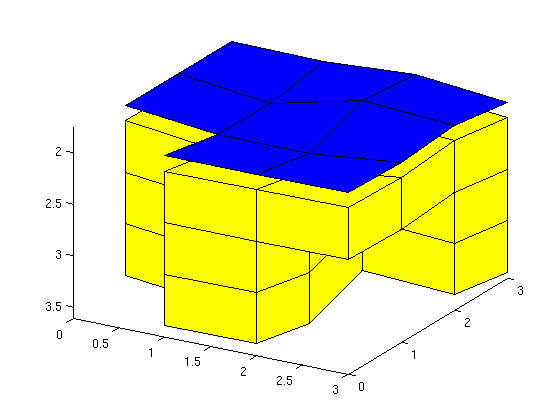
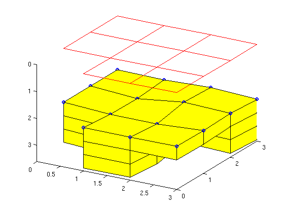
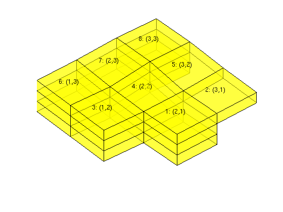
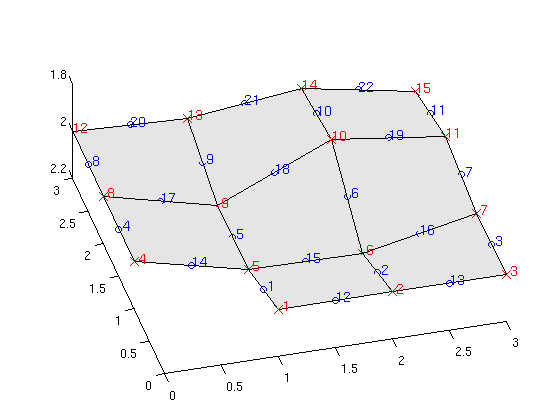
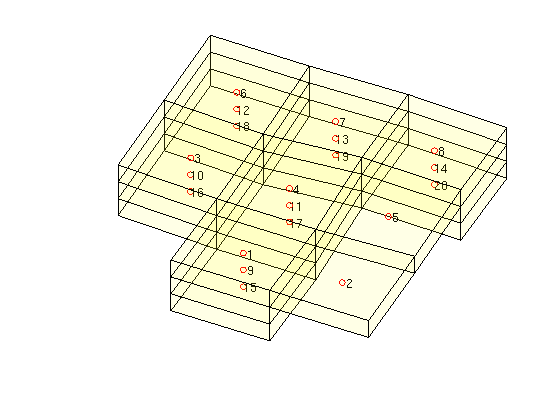
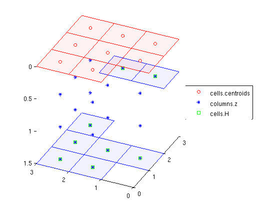
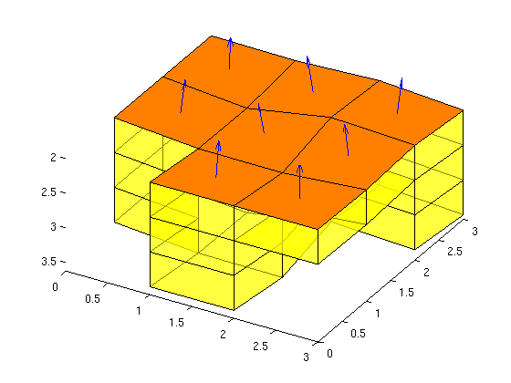

Top-Surface Grids
In this tutorial, we will go through the basics of the top-surface grids, showing how to construct them, and discussing some of the data structure.
Contents
A simple 3D example: removing unconnected cells
We make a simple 3x3x3 Cartesian model with two cut-outs, one vertical and one horizontal. The grid is specified in a left-hand system so that the z-coordinate gives the depth, i.e., is increasing downwards.
clear, clc; G = tensorGrid(0:3, 0:3, 2:0.5:3.5); C = false([3 3 3]); C(3,1:2,2)=true; C(1,1,:) = true; figure subplot(1,2,1) plotCellData(G,reshape(double(C), [],1),'EdgeColor','k'); view([20 20]), axis tight G.nodes.coords(:,3) = G.nodes.coords(:,3) + ... 0.125*sin(G.nodes.coords(:,1).*G.nodes.coords(:,2)); G = removeCells(G, find(C)); G = computeGeometry(G); subplot(1,2,2) plotGrid(G); view([20 20]), axis tight

Construct top-surface grid
Column (1,1,:) is empty and hence the corresponding cell in the 2D top-surface grid is set as inactive. The horizontal cut-out in cells (3,1:2,2), on the other hand, induces lack of vertical connection in two of the grid columns and only the top part of the columns is used in the top-surface grid.
[Gtop,Gn] = topSurfaceGrid(G); clf, plotGrid(Gn,'FaceAlpha',1); z = Gtop.nodes.z; Gtop.nodes.z = z - 0.15; plotGrid(Gtop,'FaceColor','b'); Gtop.nodes.z = z; view([30 30]), axis tight
Inspect the data structure: planar 2D grid
The top-surface grid is represented as a standard 2D grid, which in MRST is assumed to be planar. The elevation of the surface is given by the field NODES.Z in the grid structure. Although this field is not part of the standard grid structure, plotGrid will check if it is present and then interpret the 2D grid as a (non-planar) 3D surface. Hence, we need to temporarily remove the field before plotting if we want only the planar 2D grid.
clf, plotGrid(Gn); z = Gtop.nodes.z; Gtop.nodes = rmfield(Gtop.nodes,'z'); plotGrid(Gtop,'FaceColor','none','EdgeColor','r'); Gtop.nodes.z = z; % hold on; plot3(Gtop.nodes.coords(:,1), Gtop.nodes.coords(:,2), z,'bo','LineWidth',2); hold off; view([30 30]); axis tight
Numbering of cells in top-surface and 3D grid
The cells in the top-surface grid can be accessed using their cell number or through their logical ij-index given in the array CELLS.IJ. To find the centroids of the cells on the surface grid, we extend the centroids from the planar grid with the array CELLS.Z.
clf, plotFaces(Gn,(1:Gn.faces.num)','FaceAlpha',0.5); %plotGrid(Gtop,'FaceColor','r'); c = [Gtop.cells.centroids Gtop.cells.z]; index = [(1:Gtop.cells.num)' Gtop.cells.ij]; text(c(:,1)-0.2,c(:,2)+0.2,c(:,3)-0.05, ... reshape(sprintf('%d: (%d,%d)', index'),8,[])'); view([-40 70]), axis tight off
Likewise, there is a numbering of all nodes and faces. As above, we use the extra fields NODES.Z and FACES.Z to place the nodes and the centroids of the edges on the 3D top surface.
clf plotGrid(Gtop,'FaceColor',[.9 .9 .9]); hold on c = [Gtop.nodes.coords Gtop.nodes.z]; plot3(c(:,1),c(:,2),c(:,3),'xr','MarkerSize',10); text(c(:,1),c(:,2),c(:,3)-0.02,num2str((1:Gtop.nodes.num)'),... 'Color','r','FontSize',12); c = [Gtop.faces.centroids Gtop.faces.z]; plot3(c(:,1),c(:,2),c(:,3),'ob','MarkerSize',6); text(c(:,1),c(:,2),c(:,3)-0.02,num2str((1:Gtop.faces.num)'),... 'Color','b','FontSize',12); hold off, set(gca,'zlim',[1.8 2.2]), view([-15 65])
Each cell in the top-surface grid has a stack of cells attached to it. These stacks are defined by the array COLUMNS.CELLS, which maps to the indices of the cells in the corresponding 3D grid, and CELLS.COLUMNPOS, which is an indirection map into the COLUMNS.CELLS array.
clf plotFaces(Gn,1:Gn.faces.num,'FaceAlpha',0.05); hold on; c = Gn.cells.centroids; plot3(c(:,1),c(:,2),c(:,3),'or'); i = Gtop.columns.cells; text(c(i,1),c(i,2),c(i,3),num2str(i)); hold off view([25 75]), axis tight off
Geometry information
The array COLUMNS.Z gives the height of the centroid of the bottom surface of each 3D cell defined relative to the top surface (shown in light red). The array CELLS.H gives the total height of the cell column, i.e., the height difference between the top surface (in light red) and the bottom surface (in light blue).
clf c = Gtop.cells.centroids; i = rldecode(1:Gtop.cells.num, diff(Gtop.cells.columnPos),2)'; hold on plot(c(:,1),c(:,2), 'ro'); plot3(c(i,1),c(i,2),Gtop.columns.z,'b*'); plot3(c(:,1),c(:,2),Gtop.cells.H, 'gs'); hold off legend('cells.centroids','columns.z','cells.H','Location','EastOutside') z = Gtop.nodes.z; Gtop.nodes = rmfield(Gtop.nodes,'z'); plotGrid(Gtop,'FaceColor','r','EdgeColor','r','FaceAlpha',0.05); Gtop.nodes.z = z; % Hardcoded way of finding cell nodes - only works for quadrilateral cells faceNodes = reshape(Gtop.faces.nodes,2,[])'; nodes = reshape(faceNodes(Gtop.cells.faces,:)',[],1); cn = reshape(nodes,8,[]); cn = cn(:,1:Gtop.cells.num); cn = cn([1 3 6 8],:); X = reshape(Gtop.nodes.coords(cn,1),4,[]); Y = reshape(Gtop.nodes.coords(cn,2),4,[]); H = repmat(Gtop.cells.H,[1 4])'; patch(X,Y,H,'b','FaceColor','b','EdgeColor','b','FaceAlpha',0.05); view([-65 30]), axis tight
Miscellaneous
The top-surface grid consists of a subset of the faces in the 3D grid. These subfaces can be accessed using the array CELLS.MAP3DFACE. For convenience, the corresponding surface normals are stored in the array CELLS.NORMALS
clf, plotGrid(Gn,'FaceAlpha',0.5); plotFaces(Gn,Gtop.cells.map3DFace(1:Gtop.cells.num),'FaceColor','r') view([30 50]), axis tight c = [Gtop.cells.centroids Gtop.cells.z]; n = -Gtop.cells.normals; hold on quiver3(c(:,1),c(:,2),c(:,3),n(:,1),n(:,2),n(:,3),.5); hold off;